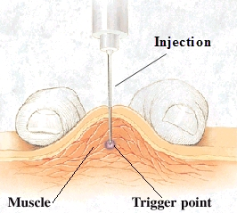

{kind=link}
What is a trigger point injection?
Myofascial Pain Syndrome (trigger points) are localized sensitive areas of the skeletal muscles that contain taut muscle bands. They are sensitive to palpation (pressing) and can be referred pain. Trigger point injections are an injection into these taut muscle bands.
What exactly is being injected?
The injection consists of a mixture of local anesthetic (like lidocaine or bupivacaine) and the steroid medication.
What is the purpose of the injection and how will it help my pain?
The purpose of the injection is so that it will help the muscle relax. When the muscle relaxes, the blood flow to that muscle increases and washes out the painful toxic metabolites that were building up. This may break the cycle of pain.
How is the injection performed?
Your physician will press on the painful areas of your body and mark the locations with a pen. Your skin will be cleaned off with alcohol and a tiny needle is used to locate these painful areas. You will feel a sharp pain when the needle hits the painful location. The local anesthetic and corticosteroid is then injected and a bandage is placed.
{kind=link}
How long will the procedure take?
The injection itself only takes a few minutes, but you will need to stay for 15-20 minutes after the injection for observation.
Will I be “put under” for the injection?
No, you will not be “put under”. You will be given a local anesthesia or sometimes a pill given by mouth. The pill is sedating and will make the procedure easy to tolerate.
What should I expect after the injection?
Initially, the pain may be increased until the medication becomes fully effective, this may take up to two weeks. You may feel soreness at the injection site. To help minimize your discomfort, please use your pain medications as prescribed. The use of ice for the first 24 hours (in 20-30min intervals) and moist heat after that may also help manage your discomfort. We advise the patients to take it easy for a day or so after the procedure. Perform activities as tolerated.
Back to top